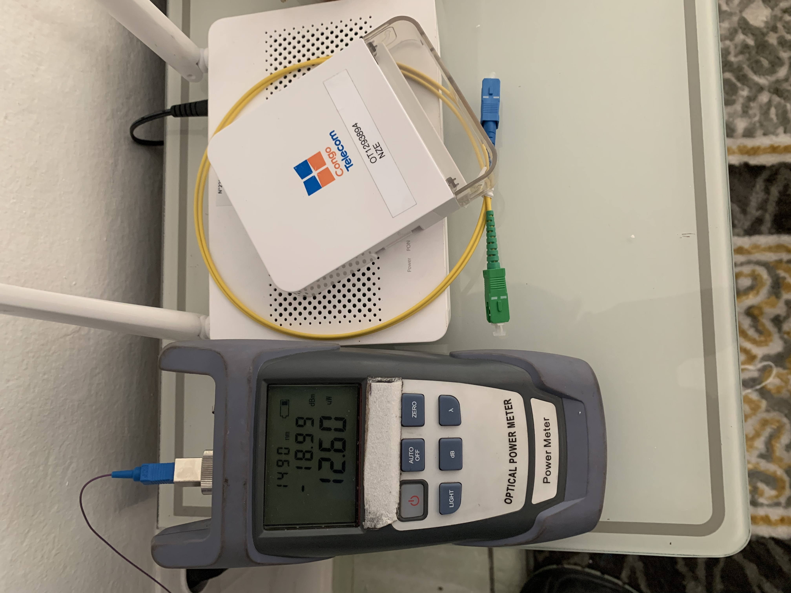
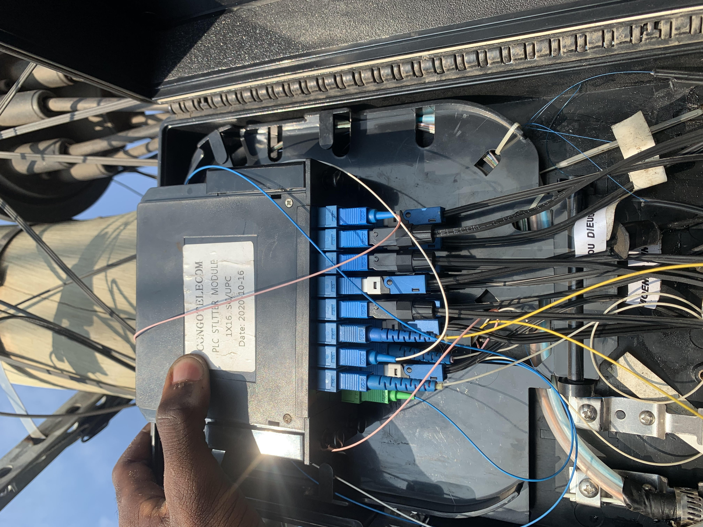
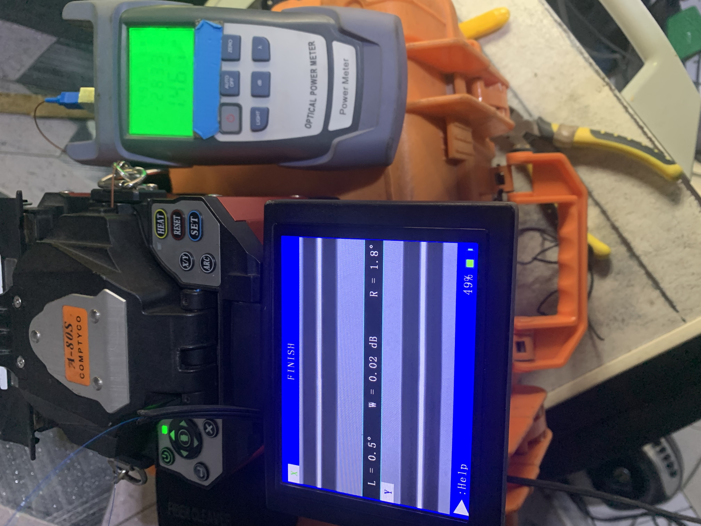
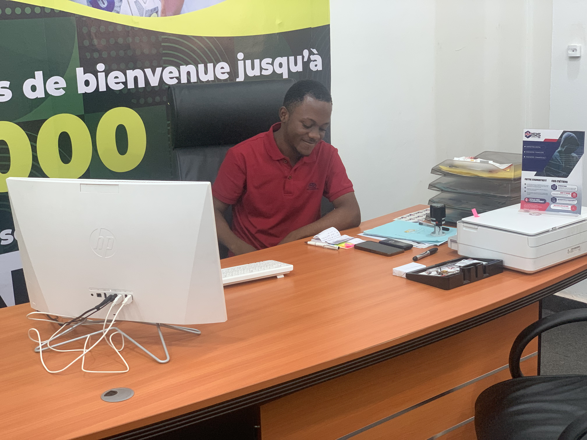
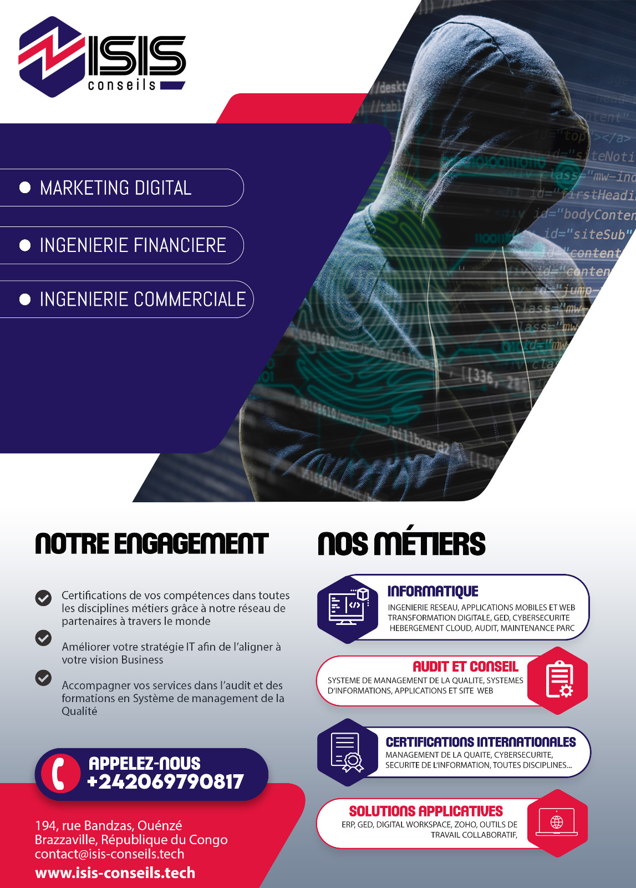
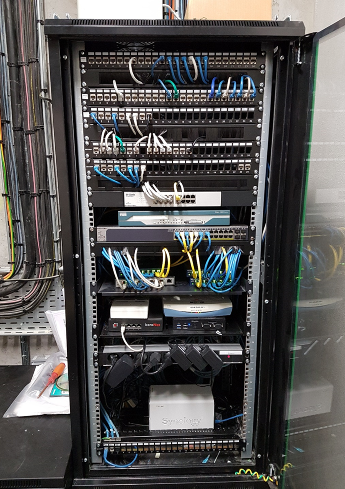
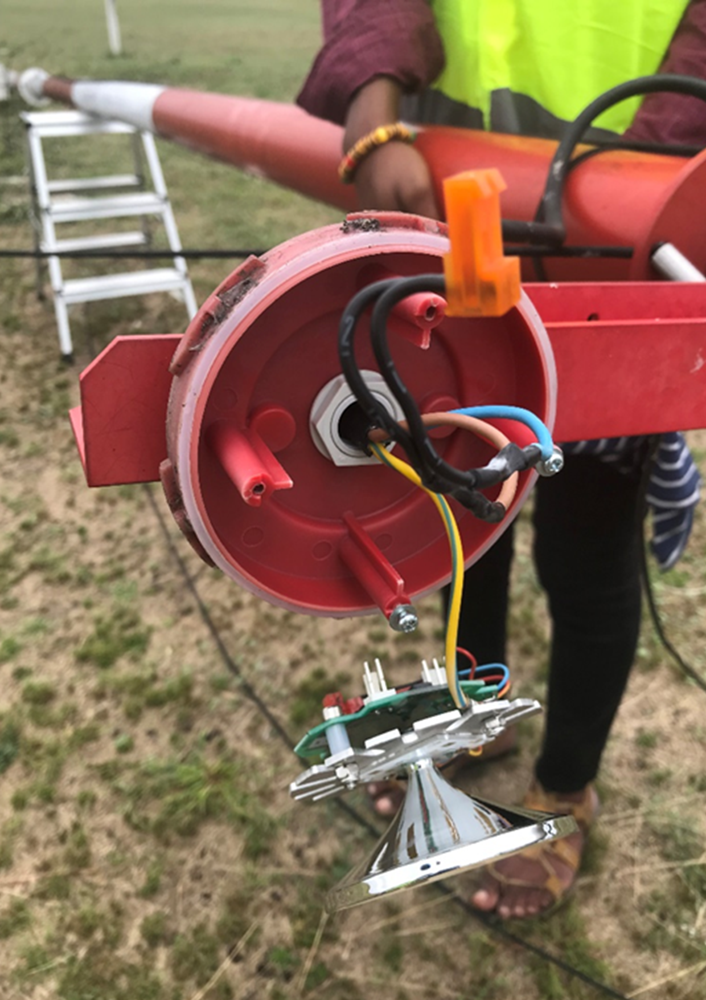
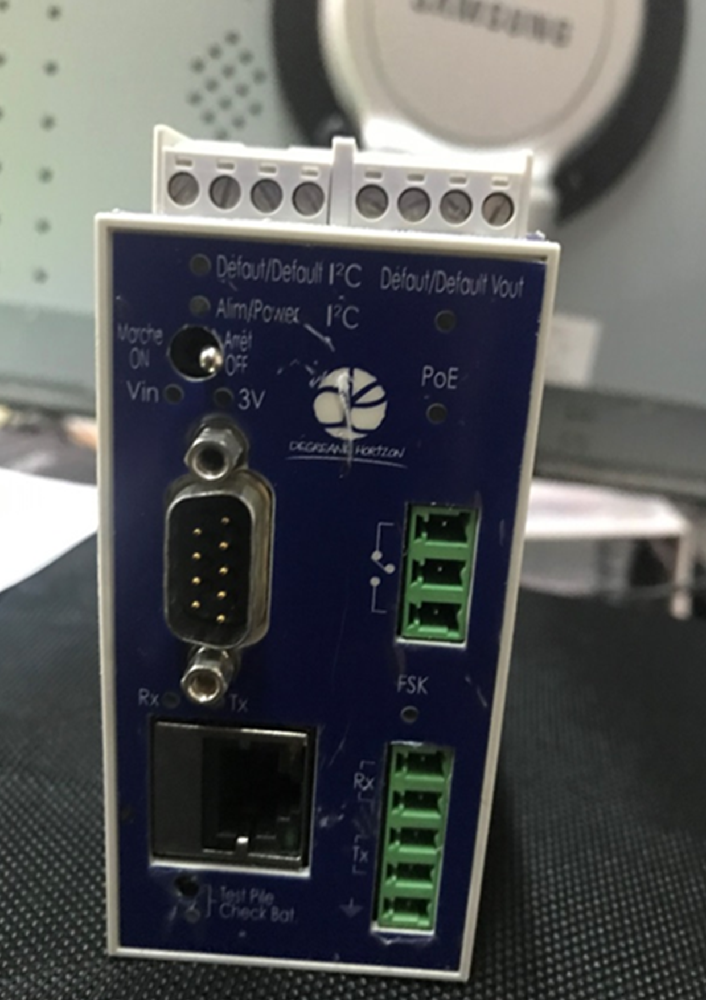

À propos de moi
"La technologie est mon terrain de jeu, la sécurité mon obsession."
Actuellement étudiant en Master 1 Ingénierie Systèmes, Réseaux et Cybersécurité à l'Institut F2I, je suis passionné par les infrastructures complexes. Avec une solide expérience terrain chez NS Réseaux - Congo Telecom (Fibre Optique) et en administration système chez Isis Conseils, je combine savoir-faire technique et rigueur.
🚀 Mon objectif : Je recherche une alternance de 2 ans pour mes années de cycle ingénieur.
Expériences Professionnelles & Stages
Technicien Déploiement Fibre Optique (D3)
NS Réseaux - Congo Telecom sept. 2024 - mars 2025Contexte : Intervention sur l'ensemble de la chaîne FTTH (NRO, PM, Colonne montante) pour le raccordement client.
Mes missions :
- Déploiement FTTH (D3), tirage de câbles et raccordement des abonnés finaux (PTO) depuis le PBO.
- Réalisation de soudures optiques de précision et gestion des cassettes dans les boîtiers de distribution.
- Validation des liens optiques par tests de continuité (Stylo optique) et mesures d'affaiblissement (Photométrie/Réflectométrie).
- Diagnostic expert des pannes (détection de coupures, courbures) et intervention de maintenance curative.



Assistant Administrateur Système & Réseau
Isis Conseils avril 2024 - juill. 2024Contexte : Audit de l'infrastructure existante, optimisation de la sécurité et support technique interne.
Mes missions :
- Installation, configuration et gestion sous Windows Server (Active Directory, DNS, DHCP).
- Déploiement automatisé de systèmes d'exploitation en réseau via serveur PXE et WDS.
- Gestion et sécurisation des partages de fichiers avec FSRM (quotas, filtres) et arborescence DFS.
- Audit informatique, maintenance du parc et création d'applications web.


Technicien de Maintenance Informatique
ASECNA avril 2023 - juin 2023Contexte : Garantie de la disponibilité matérielle et logicielle pour les services de navigation aérienne.
Mes missions :
- Maintenance préventive et curative des équipements informatiques et météorologiques haute précision.
- Support technique réactif et diagnostic approfondi (matériel et logiciel).



Mes Domaines d'Expertise
Ingénierie Réseaux
Expertise Cisco (Routing OSPF/BGP, Switching VLAN/STP).
Système & Windows
Administration Windows Server (ADDS, DNS, DHCP), Virtualisation.
Fibre Optique
Chaîne FTTH complète : Soudure, Réflectométrie, Raccordement D3.
Développement
Interfaces web (HTML/CSS/JS) et Scripting Python.
Formation & Démo Technique
Mon Parcours
Expert Ingénierie Réseaux & Cyber (M1/M2)
Institut F2I - Vincennes
Double Licence MIAGE & R&T
UDSN & IEPA Congo
Zone Interactive (JS)
1. Ma Motivation
2. Ajouter une compétence
Me Contacter
Téléphone
07 45 41 37 73
dmambiki2018@gmail.com
Localisation
Cachan (94), Île-de-France